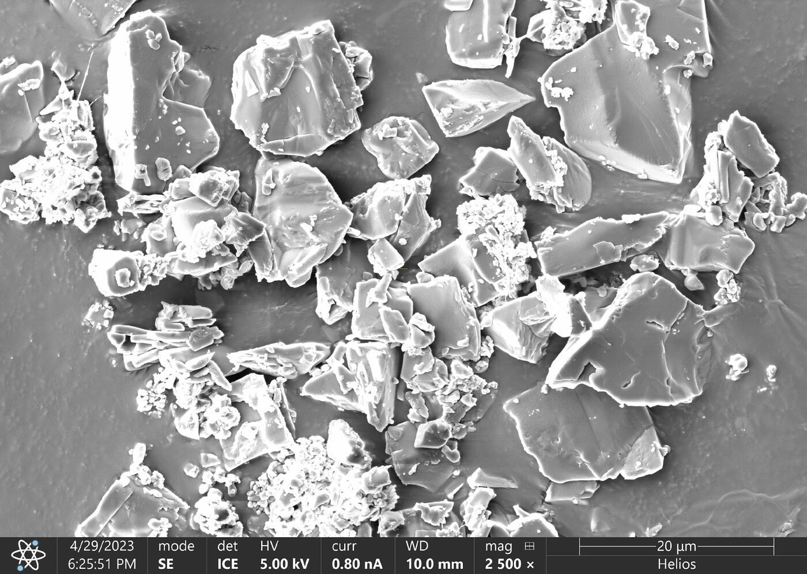
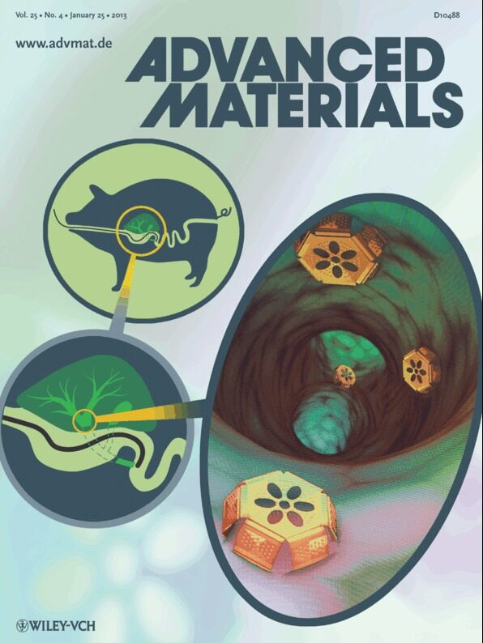
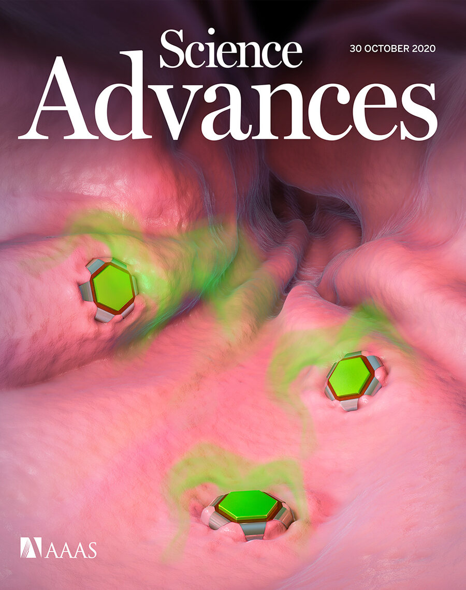
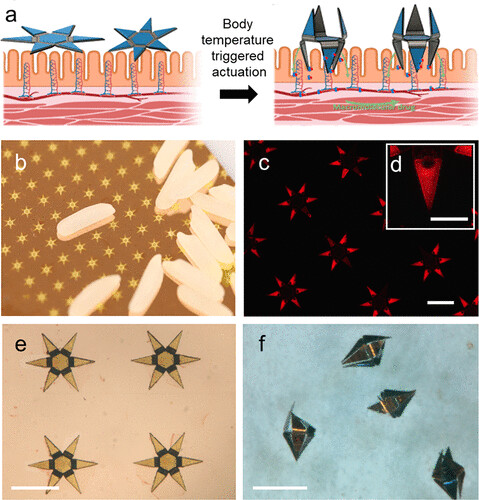
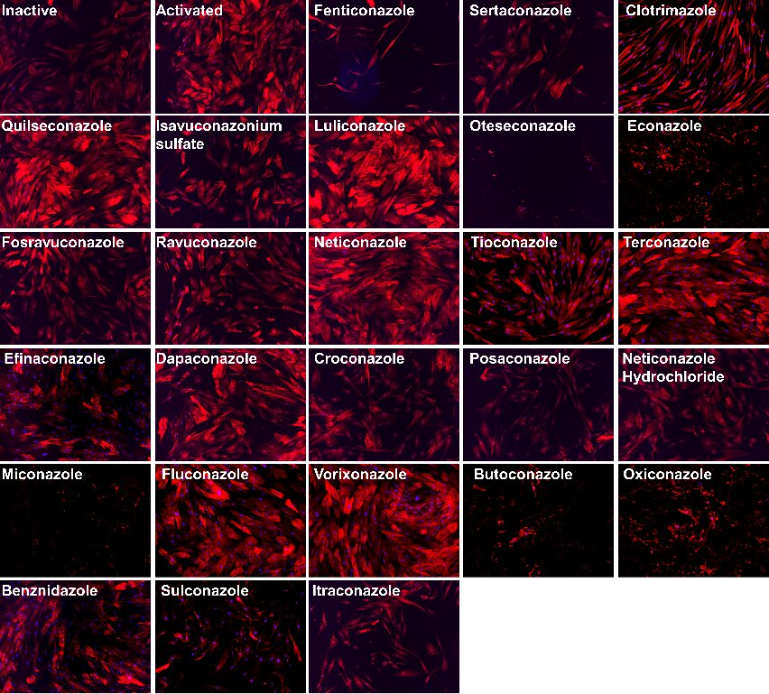

Research
Programs are listed with their investigators, funding and principal publications.
Florin M. Selaru, James C. Barrow, Kalyan Pasunooti, Jun O. Liu
Analogs of an antifibrotic azole, designed and synthesized at Johns Hopkins, with increased antifibrotic potency, negligible cytochrome P450 inhibition and oral activity in mouse models.
Florin M. Selaru, Laura Ensign
A nanocrystal sustained-release formulation for endoscopic injection into intestinal strictures, providing local drug exposure while limiting systemic exposure.

Jordan J. Green, Florin M. Selaru
Biodegradable particles based on poly(lactic-co-glycolic acid) (PLGA) and poly(beta-amino ester) (PBAE), formulated to release drug locally over an extended period. Applications include TACE-based therapy for hepatocellular carcinoma and antifibrotic treatment of intestinal strictures.
Florin M. Selaru, Jordan J. Green
CAR-T cells generated in vivo from nanoparticle-delivered mRNA, directed against activated, fibroblast activation protein (FAP)-positive fibroblasts that drive fibrosis in Crohn's disease. Transient CAR expression is intended to allow repeated, titratable dosing.
Florin M. Selaru, Hai-Quan Mao, with Alyssa Parian, Susan Gearhart, Atif Zaheer, Kevan Salimian
A construct combining nanogel, nanofiber and stem-cell components for perianal fistulas in Crohn's disease, a common and disabling complication for which surgical management is often incomplete.
David Gracias, Florin M. Selaru
Micron-scale mechanochemical devices that autonomously collect large numbers of tissue samples in a single procedure, at sampling densities not achievable with conventional endoscopic biopsy.

Florin M. Selaru, Ling Li, David Gracias
Micron-scale devices that attach to the gastrointestinal mucosa and release drug over time, forming a local depot from an oral dose.

Florin M. Selaru, Ling Li, David Gracias
The same platform adapted for biologics, which attach to the mucosa and deliver into the systemic circulation, offering an oral route for agents that currently require injection.

Florin M. Selaru, with Edom Wake · software developed with Modern Logic
An iPhone application in which adults with Crohn's disease or ulcerative colitis record symptoms, treatment changes and clinical events by voice, in their own words. Entries are organized into a longitudinal timeline, compared with the patient's own baseline, and into a summary the patient can share with the clinician before a visit. The application does not diagnose, assess disease activity or advise on treatment.
Compound screening, design, synthesis, and in vitro and in vivo testing are carried out within the Center using its own instrumentation, which shortens each design cycle.
